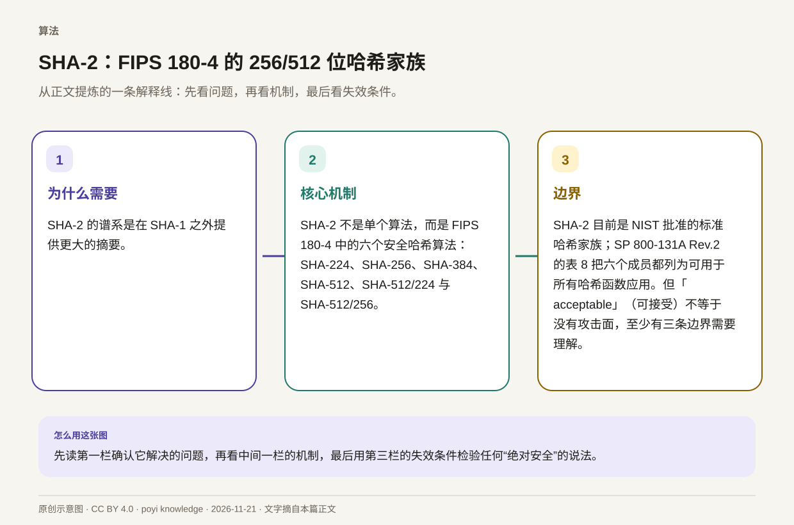
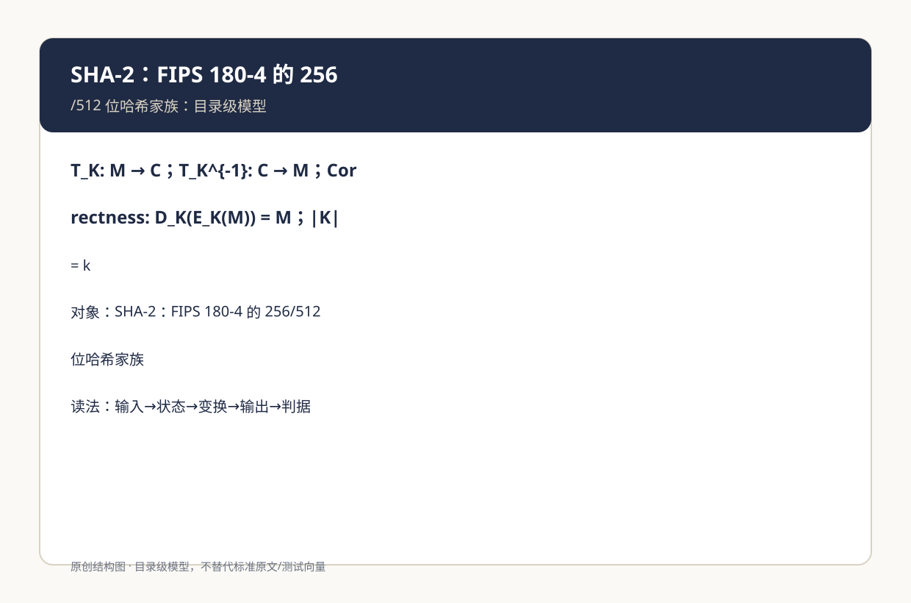

原理与机制
算法：SHA-2 散列家族（SHA-2）。SHA-2 不是单个算法，而是 FIPS 180-4 中的六个安全哈希算法：SHA-224、SHA-256、SHA-384、SHA-512、SHA-512/224 与 SHA-512/256。它们的摘要长度分别是 224、256、384、512、224 与 256 位。家族分成两条线：SHA-224/256 使用 32 位字、512 位消息块和 64 轮；SHA-384/512 及两个 SHA-512/t 变体使用 64 位字、1024 位消息块和 80 轮。| 算法 | 摘要 | 块 | 字 | 轮数 | | --- | --- | --- | --- | --- | | SHA-224 | 224 | 512 | 32 | 64 | | SHA-256 | 256 | 512 | 32 | 64 | | SHA-384 | 384 | 1024 | 64 | 80 | | SHA-512 | 512 | 1024 | 64 | 80 | | SHA-512/224 | 224 | 1024 | 64 | 80 | | SHA-512/256 | 256 | 1024 | 64 | 80 |
填充规则与 SHA-1 的结构相同，但长度字段更长：先追加一个 1 位（实现上是 0x80 字节），再补 0 位，使长度对 512 同余于 448（SHA-224/256）或对 1024 同余于 896（SHA-384/512 家族），最后追加 64 位或 128 位的大端消息长度。SHA-224/256 接受的输入小于 2^64 位，SHA-384/512 家族接受小于 2^128 位。填充后的消息被解析为「512-bit or 1024-bit blocks」（512 位或 1024 位块）；每块分成十六个「32-bit or 64-bit words」（32 位或 64 位字），按高位在前书写。以 "abc" 为例，SHA-224/256 的填充块是 61 62 63 80 后跟 52 个 00，最后 8 字节是 00 00 00 00 00 00 00 18。SHA-256/384/512 的初始值来自素数平方根的小数部分；SHA-224 与 SHA-512/t 使用各自规定的派生值：
- SHA-256：前八个素数平方根小数部分的前 32 位，即 6a09e667、bb67ae85、3c6ef372、a54ff53a、510e527f、9b05688c、1f83d9ab、5be0cd19。- SHA-224：使用与 SHA-256 相同的算法，但初始值不同，即 c1059ed8、367cd507、3070dd17、f70e5939、ffc00b31、68581511、64f98fa7、befa4fa4；这些值与 SHA-384 的 64 位初始值的低 32 位相同。- SHA-512：前八个素数平方根小数部分的前 64 位，即 6a09e667f3bcc908、bb67ae8584caa73b、3c6ef372fe94f82b、a54ff53a5f1d36f1、510e527fade682d1、9b05688c2b3e6c1f、1f83d9abfb41bd6b、5be0cd19137e2179。- SHA-384：「square roots of the ninth through sixteenth」（第九至第十六个素数的）平方根小数部分的前 64 位，即 cbbb9d5dc1059ed8、629a292a367cd507、9159015a3070dd17、152fecd8f70e5939、67332667ffc00b31、8eb44a8768581511、db0c2e0d64f98fa7、47b5481dbefa4fa4。SHA-512/224 与 SHA-512/256 使用 SHA-512/t IV 生成函数：把 SHA-512 的八个初始字与 a5a5a5a5a5a5a5a5 异或，再用这个 IV 对字符串
"SHA-512/224"或"SHA-512/256"计算 SHA-512（把 t 替换为 224 或 256），得到的八个字就是对应的 IV。FIPS 180-4 明确批准 t=224 与 t=256 两种截断。轮常量同样来自素数：SHA-224/256 使用 64 个 32 位常量，即前 64 个素数立方根小数部分的前 32 位，从 428a2f98 到 c67178f2；SHA-384/512 家族使用 80 个 64 位常量，即前 80 个素数立方根小数部分的前 64 位，从 428a2f98d728ae22 到 6c44198c4a475817。32 位变体使用Ch(x,y,z) = (x and y) xor (not x and z)、Maj(x,y,z) = (x and y) xor (x and z) xor (y and z)，以及四个旋转/右移函数：Σ0 = ROTR2 xor ROTR13 xor ROTR22、Σ1 = ROTR6 xor ROTR11 xor ROTR25、σ0 = ROTR7 xor ROTR18 xor SHR3、σ1 = ROTR17 xor ROTR19 xor SHR10。64 位变体结构相同，旋转量换成 28/34/39、14/18/41、1/8/7 与 19/61/6。消息表：前 16 个字是块字，之后W(t) = σ1(W(t−2)) + W(t−7) + σ0(W(t−15)) + W(t−16)；SHA-256 扩展到 64 个字，SHA-512 扩展到 80 个字。每轮计算
T1 = h + Σ1(e) + Ch(e,f,g) + K(t) + W(t)
T2 = Σ0(a) + Maj(a,b,c)
h←g g←f f←e e←d+T1 d←c c←b b←a a←T1+T2
所有加法在 32 位变体上模 2^32、在 64 位变体上模 2^64。每块 64 或 80 轮后，把八个工作变量加回进入该块的八个哈希字；所有块处理完后，输出就是这八个字，或按变体截断为 224/384/256 位。

为什么重要
SHA-2 的谱系是在 SHA-1 之外提供更大的摘要。FIPS 180-2 于 2002 年 8 月 1 日发布，取代 FIPS 180-1，新增 SHA-256、SHA-384 与 SHA-512 三个「capable of producing larger message digests」（能产生更大摘要）的算法；SHA-1 的算法本身不变，只调整了记号。2004 年 2 月 25 日的 Change Notice 1 加入 SHA-224；2015 年 8 月的 FIPS 180-4 又新增 SHA-512/224 与 SHA-512/256。SHA-2 不是 SHA-1 的简单截断：它使用更大的状态、不同的字长和不同的轮数。家族刻意分成 32 位与 64 位两条线：SHA-224/256 面向 32 位运算，SHA-384/512 家族面向 64 位运算。这使同一家族能覆盖不同平台与摘要长度：需要 256 位摘要时可用 SHA-256，需要更长摘要或 64 位运算优势时可用 SHA-512 家族；截断变体则在保持 SHA-256/512 压缩函数的同时提供 224/384 位输出。IV 与轮常量来自素数平方根/立方根的小数部分。这种公开、可复算的来源减少了隐藏后门的空间，但标准本身不把这当作安全性证明。FIPS 180-2 把算法称为安全，是因为计算上难以找原像或碰撞——这是当时的安全假设，不是数学定理。NIST SP 800-107 的表 1 给出了各成员的安全强度：SHA-224 的碰撞/原像抗性为 112/224 位，SHA-256 为 128/256 位，SHA-384 为 192/384 位，SHA-512 为 256/512 位，SHA-512/224 为 112/224 位，SHA-512/256 为 128/256 位。
应用与实例
SHA-2 的典型用途包括数字签名、证书、HMAC 和基于哈希的密钥派生。SP 800-107 把数字签名列为 SHA-2 的典型用途，并指出数字签名的安全强度取哈希的碰撞抗性强度；它也专门讨论 HMAC，说明 HMAC 的安全性取决于底层哈希、密钥强度和 MacTag 长度，并把 SHA-2 用于两步提取-扩展的密钥派生结构。HMAC-SHA-2 有公开的一致性向量。RFC 4231 的 Jefe 向量使用密钥 "Jefe"、消息 "what do ya want for nothing?"，HMAC-SHA-256 为 5bdcc146bf60754e6a042426089575c75a003f089d2739839dec58b964ec3843，HMAC-SHA-512 为 164b7a7bfcf819e2e395fbe73b56e0a387bd64222e831fd610270cd7ea2505549758bf75c05a994a6d034f65f8f0e6fdcaeab1a34d4a6b4b636e070a38bce737。RFC 6234 则提供 SHA-224/256/384/512 的 C 参考代码、测试向量以及 HMAC/HKDF 实现。NIST 的当前政策把 SHA-2 家族（六个成员）列为可用于所有哈希函数应用。SP 800-131A Rev.2 的表 8 明确写出这一点。需要强调：这里说的是标准层面的可接受性，不是任何 SHA-2 用法都自动安全；具体协议仍要选对属性（碰撞、原像、第二原像）和密钥管理。截断变体适合输出长度受限的场景，但代价是碰撞抗性随输出长度下降。SP 800-107 允许截断消息摘要，但要求按截断长度的一半计算碰撞抗性；例如 96 位截断的 SHA-256 只有 48 位碰撞抗性。不要把 SHA-256 的 256 位输出直接等同于 256 位碰撞安全。

边界与攻击面
SHA-2 目前是 NIST 批准的标准哈希家族；SP 800-131A Rev.2 的表 8 把六个成员都列为可用于所有哈希函数应用。但「acceptable」（可接受）不等于没有攻击面，至少有三条边界需要理解。长度扩展：SHA-2 采用 Merkle-Damgård 迭代，每块处理后的链接值就是下一块的输入，最终输出也是链接值。因此，给定 H(M) 与 M 的长度，攻击者可以在不知道 M 的情况下计算 H(M || pad(M) || X)。这不是碰撞，但会破坏把哈希直接当 MAC 的朴素构造。本批次用 "abc" 做了演示：已知 SHA-256("abc") 与 64 字节填充长度，不重新读取原消息就能算出 f4566a6bc1df12da948d3d1da5e67458ff0cb761d456bd7382438a8903b433b4，与直接哈希 abc || pad(abc) || "extra" 的结果一致。不要把 H(K||M) 当 MAC：由于长度扩展，直接用 SHA-2 拼接密钥和消息的 MAC 是不安全的。应使用 HMAC；SP 800-107 对 HMAC 的使用给出指导，HMAC 通过 ipad/opad 两层把密钥处理与消息哈希分开。RFC 4231 的向量可以用来核对 HMAC-SHA-2 实现。截断会降低强度：截断到 t 位的摘要最多提供约 t/2 位碰撞抗性；SHA-224、SHA-384、SHA-512/224、SHA-512/256 的碰撞抗性分别约为 112、192、112、128 位。选择截断变体时，必须按目标安全强度估算，而不是按父变体名义上的输出位数估算。此外，NIST 的批准是政策判断，不是数学证明；SHA-2 的压缩函数仍可能在未来出现更好的密码分析。工程上应把 SHA-2 当作当前可用的标准哈希，而不是永远安全的保证；需要不同结构假设时，SHA-3 是另一个 NIST 批准的家族。
历史与背景
- 2002 年 8 月 1 日：FIPS 180-2 发布，包含 SHA-1、SHA-256、SHA-384 与 SHA-512；它取代 FIPS 180-1，新增三个能产生更大摘要的算法。- 2004 年 2 月 25 日：FIPS 180-2 的 Change Notice 1 加入 SHA-224。- 2008 年 10 月 17 日：FIPS 180-2 被后续版本取代；FIPS 180-4 的附录 C 以 FIPS 180-3 为基线描述技术变更。- 2011 年 5 月：RFC 6234 发布，取代 RFC 4634，提供 SHA-224/256/384/512、HMAC 与 HKDF 的开源实现和测试向量。- 2015 年 8 月：FIPS 180-4 发布，在 FIPS 180-3 的基础上新增 SHA-512/224 与 SHA-512/256。- 2019 年 3 月：NIST SP 800-131A Rev.2 发布，表 8 把 SHA-2 家族列为可用于所有哈希函数应用。
逐步示例与核验
复算示例
取标准或公开测试向量中的一组参数，按“输入—执行—输出”记录：先写出该条目的形式式 (h=H(M),\quad H:{0,1}^{*}\to{0,1}^{n})；再按规范顺序执行每一步，最后把输出与独立实现或标准向量逐字节对照。若没有可引用的数值向量，就只记录结构步骤，不伪造输出。
参考出处
- Wikipedia search entry for SHA-2 散列家族. https://zh.wikipedia.org/w/index.php?search=SHA-2%20%E6%95%A3%E5%88%97%E5%AE%B6%E6%97%8F
- Handbook of Applied Cryptography (Menezes, van Oorschot, Vanstone). https://www.cacr.math.uwaterloo.ca/hac/